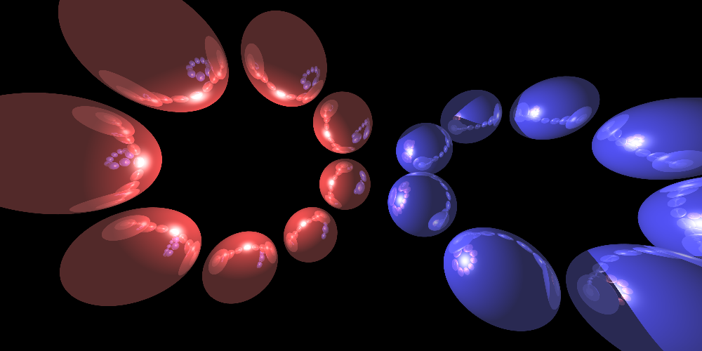
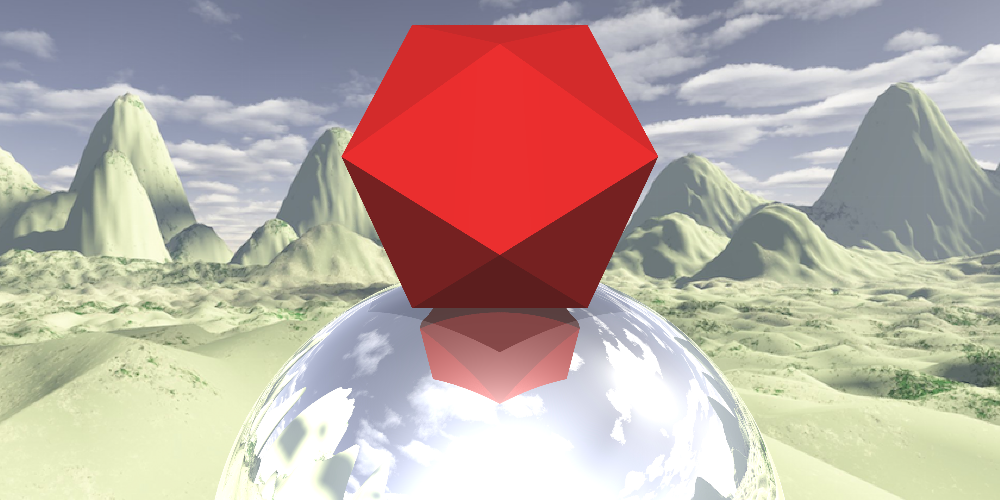
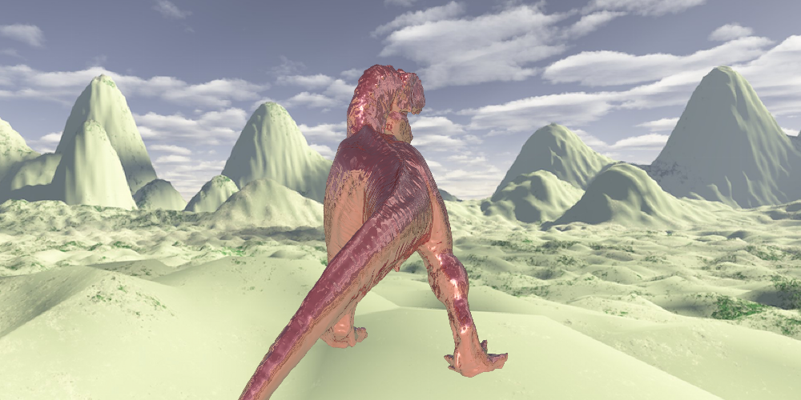

My raytracer was the second assignment for CS184, Foundations of Computer Graphics. It is written entirely in C++, uses a linear algebra library called Eigen, and also uses a small library for writing .png files called LodePNG. The program takes in a scene file, which determines the parameters of the scene, such as camera size and position, lighting (e.g. where to set point and directional lights) and most importantly, which objects to render. The objects can be specified directly as a list of primitive triangles and spheres, or as an object (.obj) file. The user can also specify affine transformations to apply on the objects, such as rotation and translation. Some additional features I implemented for this project include anti-aliasing, rendering skybox textures, and optimized ray collision testing using AABB trees to render objects with hundreds of thousands of vertices in a few seconds. The gallery below showcases these features.
Two rings of spheres, showing both reflection and shadowing. Note that a point light near the middle of the red ring of spheres is the only light source in this scene. I originally used a simpler version of this scene to test that objects on opposite sides of a point light would not incorrectly occlude each other. The positions of the spheres are specified using rotation transformations rather than being hard-coded.
The first scene I rendered using a skybox. While the sphere might appear somewhat transparent, it is actually reflecting the face of the skybox behind the camera, giving it a sort of indirect "sky" texture. The user is able to set the skybox through the scene file by specifying 6 image faces that form the 6 sides of a large box that covers the entire scene.
An early test for shadowing and reflection with a triangular mesh object, sphere, and skybox all in one. The sphere is reflecting the skybox image (this time, a desert scene) as well as the red icosahedron. The icosahedron was specified through a .obj file without interpolated normals (i.e. flat shading). Notice that the light is shining from the camera out into the scene, causing the ball to have a very bright specular shine at the center.
My first test for bilinearly interpolated normals in an .obj file. Observe that the teapot appears smooth, since the normals at each point of each triangle are computed by interpolating the three normals at the vertices. Rendering the 1200 vertices in this teapot also drove me to implement the AABB trees, since it was already taking about half a minute to render the scene using naive raytracing. After the optimization, the time taken shrank to less than 2 seconds.
Massive (~15 MB) .obj file with 200,000 faces. This is where my AABB really saves the day. The non-anti-aliased version takes less than 4 seconds to generate the image.